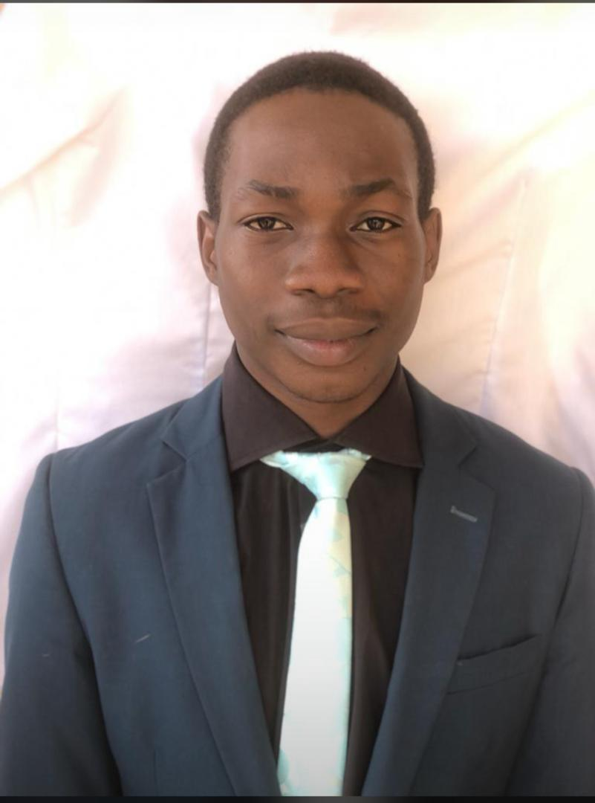

Junior secondary School
LivingStone Model college
Jssce
FrontEnd Developer
LivingStone Model college
Jssce
Calvary Model college
ssce
Federal University of Technology Akure
B.Tech in cybersecurity
I worked with team of intern developer to provide for IT system
PERSONAL DETAILS
DOB:25/04/1999
Nationality: Nigerian